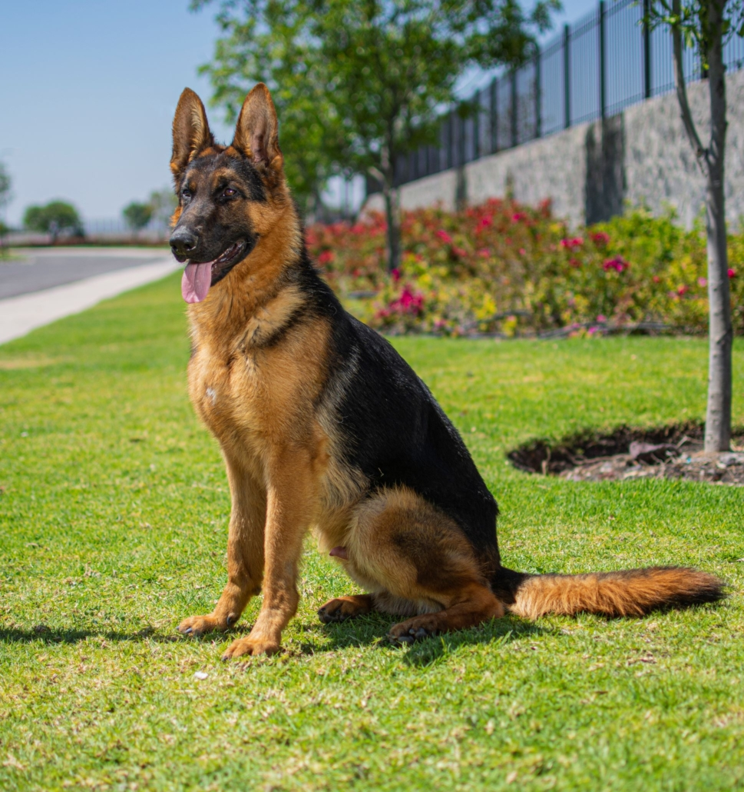
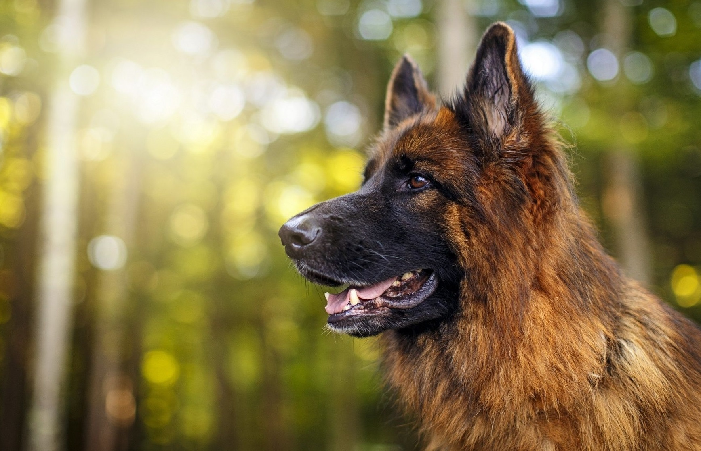

<!DOCTYPE html>
<html lang="en">

<head>
  <meta charset="UTF-8">
  <meta http-equiv="X-UA-Compatible" content="IE=edge">
  <meta name="viewport" content="width=device-width, initial-scale=1.0">
  <!-- Favicon-->
  <link rel="icon" type="image/x-icon" href="assets/favicon.ico" />
  <!-- Bootstrap Icons-->
  <link href="https://cdn.jsdelivr.net/npm/bootstrap-icons@1.5.0/font/bootstrap-icons.css" rel="stylesheet" />
  <!-- Google fonts-->
  <link href="https://fonts.googleapis.com/css?family=Merriweather+Sans:400,700" rel="stylesheet" />
  <link href="https://fonts.googleapis.com/css?family=Merriweather:400,300,300italic,400italic,700,700italic"
    rel="stylesheet" type="text/css" />
  <!-- SimpleLightbox plugin CSS-->
  <link href="https://cdnjs.cloudflare.com/ajax/libs/SimpleLightbox/2.1.0/simpleLightbox.min.css" rel="stylesheet" />
  <!-- Core theme CSS (includes Bootstrap)-->
  <link href="css/styles.css" rel="stylesheet" />
  <link rel="canonical" href="https://getbootstrap.com/docs/5.2/examples/blog/">


  <link href="/docs/5.2/dist/css/bootstrap.min.css" rel="stylesheet"
    integrity="sha384-rbsA2VBKQhggwzxH7pPCaAqO46MgnOM80zW1RWuH61DGLwZJEdK2Kadq2F9CUG65" crossorigin="anonymous">

  <!-- Favicons -->
  <link rel="apple-touch-icon" href="/docs/5.2/assets/img/favicons/apple-touch-icon.png" sizes="180x180">
  <link rel="icon" href="/docs/5.2/assets/img/favicons/favicon-32x32.png" sizes="32x32" type="image/png">
  <link rel="icon" href="/docs/5.2/assets/img/favicons/favicon-16x16.png" sizes="16x16" type="image/png">
  <link rel="manifest" href="/docs/5.2/assets/img/favicons/manifest.json">
  <link rel="mask-icon" href="/docs/5.2/assets/img/favicons/safari-pinned-tab.svg" color="#712cf9">
  <link rel="icon" href="/docs/5.2/assets/img/favicons/favicon.ico">
  <meta name="theme-color" content="#712cf9">
  <title>Document</title>
</head>

<body>

</body>

</html>
<html lang="en">

<head>
  <meta charset="utf-8">
  <meta name="viewport" content="width=device-width, initial-scale=1">
  <meta name="description" content="">
  <meta name="author" content="Mark Otto, Jacob Thornton, and Bootstrap contributors">
  <meta name="generator" content="Hugo 0.104.2">
  <title>Blog Template · Bootstrap v5.2</title>

  <style>
    .bd-placeholder-img {
      font-size: 1.125rem;
      text-anchor: middle;
      -webkit-user-select: none;
      -moz-user-select: none;
      user-select: none;
    }

    @media (min-width: 768px) {
      .bd-placeholder-img-lg {
        font-size: 3.5rem;
      }
    }

    .b-example-divider {
      height: 3rem;
      background-color: rgba(0, 0, 0, .1);
      border: solid rgba(0, 0, 0, .15);
      border-width: 1px 0;
      box-shadow: inset 0 .5em 1.5em rgba(0, 0, 0, .1), inset 0 .125em .5em rgba(0, 0, 0, .15);
    }

    .b-example-vr {
      flex-shrink: 0;
      width: 1.5rem;
      height: 100vh;
    }

    .bi {
      vertical-align: -.125em;
      fill: currentColor;
    }

    .nav-scroller {
      position: relative;
      z-index: 2;
      height: 2.75rem;
      overflow-y: hidden;
    }

    .nav-scroller .nav {
      display: flex;
      flex-wrap: nowrap;
      padding-bottom: 1rem;
      margin-top: -1px;
      overflow-x: auto;
      text-align: center;
      white-space: nowrap;
      -webkit-overflow-scrolling: touch;
    }
  </style>


  <!-- Custom styles for this template -->
  <link href="https://fonts.googleapis.com/css?family=Playfair+Display:700,900&amp;display=swap" rel="stylesheet">
  <!-- Custom styles for this template -->
  <link href="blog.css" rel="stylesheet">
</head>

<body>

  <div class="container">
    <header class="blog-header lh-1 py-3">

    </header>

    <div class="nav-scroller py-1 mb-2">
      <!-- Navigation-->
      <nav class="navbar navbar-expand-lg navbar-light fixed-top py-3" id="mainNav">
        <div class="container px-4 px-lg-5">

          <a class="navbar-brand" href="./Razas.html">  PERRON</a>
          <button class="navbar-toggler navbar-toggler-right" type="button" data-bs-toggle="collapse"
            data-bs-target="#navbarResponsive" aria-controls="navbarResponsive" aria-expanded="false"
            aria-label="Toggle navigation"><span class="navbar-toggler-icon"></span></button>
          <div class="collapse navbar-collapse" id="navbarResponsive">
            <ul class="navbar-nav ms-auto my-2 my-lg-0">
              <li class="nav-item"><a class="nav-link" href="#services">ACERCA</a></li>
              <li class="nav-item"><a class="nav-link" href="#about">METODOS</a></li>
              <li class="nav-item"><a class="nav-link" href="#portfolio">RAZAS</a></li>
              <li class="nav-item"><a class="nav-link" href="#contact">DONACIONES</a></li>
            </ul>
          </div>
        </div>
      </nav>
    </div>
  </div>

  <!-- BANNER -->
  <main class="container ">
    <div class="p-4 p-md-5 mb-4 rounded text-light " style="background-image: url('./imgp/Pastor6.jpg') ;  
  width: 100%;
   background-repeat: no-repeat;
    left: 0;
    right: 0;
    align-items: center;
     justify-content: center; 
     flex: auto;
    align-content: center;
    padding:15px;
    height: auto;
    background-position-y: center;
    background-position-x: right;
    background-size:100%;  ">
      <div class="col-md-6 px-0">
        <h1 class="display-4 fst-italic">PASTOR ALEMAN</h1>
        <br>
        <br>
        <br>
        <p class="lead mb-0"><a href="#" class="text-white fw-bold">Continue reading...</a></p>
      </div>
    </div>

    <!-- FOTO 1 -->
    <div class="row mb-2">
      <div class="col-md-6">
        <div class="row g-0 border rounded overflow-hidden flex-md-row mb-4 shadow-sm h-md-250 position-relative">
          <div class="col p-4 d-flex flex-column position-static">
            <h3 class="mb-0">Orígenes del pastor alemán</h3>
            <div class="mb-1 text-muted"></div>
            <p class="card-text mb-auto">
              Originario de Alemania, Tiene su origen en el capitán Max Frederic Emile von Stephanitz.</p>
            <a href="#foto1" class="stretched-link">Continue reading</a>
          </div>
          <div class="col-auto d-none d-lg-block">
            
            <!-- <svg  width="200" height="250" > -->
            <rect width="100%" height="100%" fill="#55595c"></rect>

          </div>
        </div>
      </div>

      <!-- FOTO 2 -->
      <div class="col-md-6">
        <div class="row g-0 border rounded overflow-hidden flex-md-row mb-4 shadow-sm h-md-250 position-relative">
          <div class="col p-4 d-flex flex-column position-static">
            <strong class="d-inline-block mb-2 text-success"></strong>
            <h3 class="mb-0">Caracteristicas</h3>
            <div class="mb-1 text-muted">Nov 11</div>
            <p class="mb-auto">Perro de gran tamaño, el pastor alemán tiene un físico robusto, atlético y resistente. Su
              cuerpo es armonioso.</p>
            <a href="#foto2" class="stretched-link">Continue reading</a>
          </div>
          <div class="col-auto d-none d-lg-block">
            
            <rect width="100%" height="100%" fill="#55595c"></rect>

          </div>
        </div>
      </div>
    </div>

    <div class="row g-5">

      <!-- ARTICULO -->
      <div class="col-md-8">

        <article class="blog-post">
          <h2 class="blog-post-title mb-1" id="foto1">
            Orígenes
          </h2>
          <p class="blog-post-meta">
            December 4, 2022 by Kike
          </p>

          <p>
            este perro de gran tamaño es el resultado del cruce de varios perros pastores.
          </p>
          <hr>
          <p>
            La raza del pastor alemán se reconoció oficialmente en 1899. Posteriormente,
            este excelente perro de trabajo se utilizó por el ejército alemán como centinela o para detectar olores
            de gas..
          </p>

          <h2>
            Carácter y aptitudes del pastor alemán
          </h2>
          <blockquote class="blockquote">
            <p>
              Carácter del pastor alemán
            </p>
          </blockquote>
          <p>
            Muy dócil y cariñoso, este trotador de paso amplio es naturalmente bondadoso y protector con los niños.
            Hay que acostumbrarlo de joven a codearse con otros perros para que los tolere.
            El pastor alemán es un perro que puede ladrar con frecuencia: esto se debe a su instinto desarrollado de
            perro guardián, como suele ocurrir con los perros pastores.
          </p>
          <blockquote class="blockquote">
            <p>
              Aptitudes del pastor alemán
            </p>
          </blockquote>
          <p>
            ¡Es un perropolivalente que saber hacer de todo! Perro policía, perro guía para ciegos,
            perro de asistencia para discapacitados, perro de defensa y perro de rescate en avalanchas o seísmos.
            Su olfato extremadamente desarrollado también es útil para detectar drogas o enfermedades en seres humanos.
            esta raza atrae numerosas vocaciones de criadores...
            Si deseas tener un pastor alemán, da preferencia a los criadores que ofrecen perros del Libro de Orígenes
            Francés (LOF) y que someten a sus reproductores a pruebas de carácter.
          </p>
          <h2>
            El dueño ideal para un pastor alemán
          </h2>
          <p>
            ¿Hay un perfil ideal? Tras un periodo de adiestramiento, este perro es adecuado para dueños más bien
            activos,
            ya que es muy polivalente. El pastor alemán es muy adaptabley necesita un estrecho contacto con su dueño
            para desarrollarse.
            <br>
            <br>
            Una educación firme y justa puede canalizar su carácter firmee incluso bien fuerte. Por último, como muchos
            perros, no tolera la soledad prolongada.
          </p>
          <h2>
            Actividades para hacer con un pastor alemán
          </h2>
          <p>
            Necesita actividad física y mental. Si el dueño vive en un apartamento, tendrá que proporcionarle largas
            salidas varias veces al día.
            <br>
            Es importante saber que este perro necesita hacer despejarse: deportes caninos
            («agility», «canicross», «ring», rastreo, reagrupación de rebaños, etc.), paseos y juegos de pelota.
            Su mayor placer es complacer a su dueño y trabajar a su lado.
          </p>
          <h2 id="foto2">
            Características físicas del pastor alemán
          </h2>
          <p>
            Perro de gran tamaño, el pastor alemán tiene un físico robusto, atlético y resistente.
            Su cuerpo es armonioso, con una línea de la espalda a veces descendente.
            ¡Está hecho para el esfuerzo físico!
            <br>
            Se dice que tiene una silueta lupoide: de ahí viene su apodo de «perro lobo».
          </p>
          <blockquote class="blockquote">
            <p>
              El pelaje del pastor alemán
            </p>
          </blockquote>
          <p>
            Su pelo es corto o largo, tendido sobre el cuerpo. Su pelaje es duro y muy denso, con un subpelo denso.

            El color más extendido es el negro, con marcas de color marrón rojizo, marrones o amarillas a gris claro.
            También puede ser negro y gris carbón monocolor.
          </p>
          <blockquote class="blockquote">
            <p>
              El peso y el tamaño del pastor alemán
            </p>
          </blockquote>
          <p>
            ¡Es un perro grande! Puede medir hasta 65 cm de altura y pesar entre 22 kg y 40 kg.
          </p>
          <blockquote class="blockquote">
            <p>
              El rostro del pastor alemán
            </p>
          </blockquote>
          <p>
            La cabeza es larga con un hocico alargado. Sus orejas son de tamaño medio, anchas en su base,
            rectas y puntiagudas.La nariz debe ser negra. Parece que lleva una máscara negra, ¡como un superhéroe!
          </p>
          <h2>
            Cuidado del pastor alemán
          </h2>
          <blockquote class="blockquote">
            <p>
              El aseo del pastor alemán
            </p>
          </blockquote>
          <p>
            Este perro es fácil de asear. Se recomienda un cepillado dos veces a la semana.
            Este hay que aumentarlo en el periodo de muda, ya que el perro pierde más pelo en primavera y otoño.
            En dicho caso, hay que cepillarlo todos los días.

            Si es necesario lavar a tu pastor alemán, elige un champú específico para perros.
            Los detergentes o los champús para personas no son adecuados para los animales

            Atención: las garras del pastor alemán pueden crecer bastante rápido. Si es necesario,
            puedes pedir una cita con el veterinario para que le corte las uñas.

            Se recomienda cepillarle los dientes para evitar la formación de sarro. Para tu información:
            ¡el seguro médico para mascotas de SantéVet cubre la eliminación de sarro!
          </p>
          <blockquote class="blockquote">
            <p>
              La alimentación del pastor alemán
            </p>
          </blockquote>
          <p>
            ¿Croquetas de buena calidad o alimentación para humanos? Todo depende de la actividad del perro,
            de su edad y de su estado de salud. Consulta con tu veterinario.

            Dos comidas al día son mejores que una. En cualquier caso, no debe jugar ni correr mucho justo antes o
            después de
            la comida. De hecho, si lo hace, se corre el riesgo de provocar una dilatación-torsión del estómago,
            la cual debe tratarse de urgencia por el veterinario.

            Descubre las causas de la torsión de estómago en los perros.
          </p>
          <h2>
            Enfermedades del pastor alemán: displasia de cadera
          </h2>
          <p>
            Al igual que otros perros grandes, uno de los problemas de salud más comunes en el pastor alemán es la
            displasia
            de cadera. Esta patología debe tomarse en serio, ya que puede discapacitar a tu mascota.
          </p>
          <h2>
            Otras enfermedades del pastor alemán: artrosis y enfermedades cutáneas
          </h2>
          <p>
            El pastor alemán también puede sufrir otras enfermedades que afectan al sistema óseo y cartilaginoso.
            Así, puede sufrir artrosis o ciertas parálisis.

            Esta raza también es propensa a las enfermedades cutáneas como las dermatitis o las piodermitis.

            Este perro también puede padecer intolerancia digestiva, hipotiroidismo y enfermedad de Von Willebrand
            (enfermedad hereditaria de riesgo hemorrágico).

            Por último, durante los paseos de verano o los juegos en el jardín, una abeja, una avispa o
            un avispón pueden picarle. En dicho caso hay que reaccionar rápidamente y llevarlo de urgencia al
            veterinario
            para prevenir cualquier riesgo de alergia.
          </p>
      </div>

      <!-- TABLA  -->
      <div class="col-md-4">
        <div class="position-sticky" style="top: 2rem;">
          <div class="p-4 mb-3 bg-light rounded">
            <h4 class="fst-italic">
              ACERCA
            </h4>
            <p class="mb-0">
            <table class="table">

              <tbody>
                <tr>
                  <th scope="row">
                    TAMAÑO DEL MACHO
                  </th>

                  <td colspan="2">
                    60-65 cm
                  </td>
                </tr>
                <tr>
                  <th scope="row">
                    TAMAÑO DE LA HEMBRA
                  </th>

                  <td colspan="2">
                    55-60 cm
                  </td>
                </tr>
                <tr>
                  <th scope="row">
                    PESO DEL MACHO
                  </th>
                  <td colspan="2">
                    30-40 kg
                  </td>
                </tr>
                <tr>
                  <th scope="row">
                    PESO DE LA HEMBRA
                  </th>
                  <td colspan="2">
                    22-32 kg
                  <td>
                </tr>
                <tr>
                  <th scope="row">
                    COLOR
                  </th>
                  <td colspan="2">
                    negro con marcas marrón rojizo,
                    marrones o amarillas a gris claro,
                    negro y gris carbón monocolor
                  <td>
                </tr>
                <tr>
                  <th scope="row">
                    PELAJE
                  </th>
                  <td colspan="2">
                    corto o largo, rígido y acostado sobre el cuerpo
                  <td>
                </tr>
                <tr>
                  <th scope="row">
                    ESPERANZA DE VIDA
                  </th>
                  <td colspan="2">
                    10-12 años
                  <td>
                </tr>
                <tr>
                  <th scope="row">
                    RIESGO DE ENFERMEDADES
                  </th>
                  <td colspan="2">
                    displasia, artrosis, intolerancia digestiva, parálisis, torsión de estómago, dermatitis,
                    piodermitis, epilepsia
                  <td>
                </tr>
                <tr>
                  <th scope="row">
                    ALIMENTACIÓN
                  </th>
                  <td colspan="2">
                    variable según la edad, el sexo, la actividad, si está esterilizado o no y las patologías
                  <td>

                </tr>
                <tr>
                  <th scope="row">
                    HIGIENE
                  </th>
                  <td colspan="2">
                    2 cepillados a la semana
                  <td>
                </tr>
              </tbody>
            </table>
            </p>
          </div>
        </div>
      </div>
    </div>

  </main>

  <footer class="blog-footer">
  </footer>

  <!-- Bootstrap core JS-->
  <script src="https://cdn.jsdelivr.net/npm/bootstrap@5.1.3/dist/js/bootstrap.bundle.min.js"></script>

  <!-- SimpleLightbox plugin JS-->
  <script src="https://cdnjs.cloudflare.com/ajax/libs/SimpleLightbox/2.1.0/simpleLightbox.min.js"></script>

  <!-- Core theme JS-->
  <script src="js/scripts.js"></script>

  <!-- * * * * * * * * * * * * * * * * * * * * * * * * * * * * * * * * * * * * * * * *-->
  <!-- * *                               SB Forms JS                               * *-->
  <!-- * * Activate your form at https://startbootstrap.com/solution/contact-forms * *-->
  <!-- * * * * * * * * * * * * * * * * * * * * * * * * * * * * * * * * * * * * * * * *-->
  <!-- JS DE BOOSTRAP -->
  <script src="https://cdn.startbootstrap.com/sb-forms-latest.js"></script>


</body>

</html>